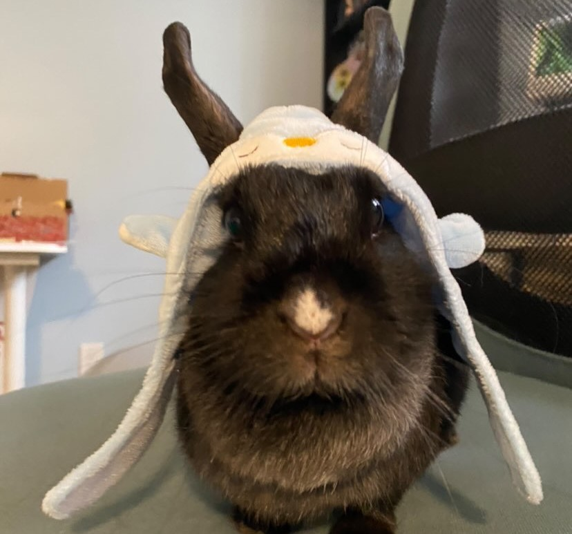

Winky.
2016-2023

Winky was named after that one house elf from Harry Potter that the movies completely forgot about. She loved parsley, Martin's apple chips, and basking in the sun. She was a model for professional easter-themed photoshoots as THE Easter bunny! I'll never forget her big dulap (the name for the large fat around her neck,) and her cute little white nose.
